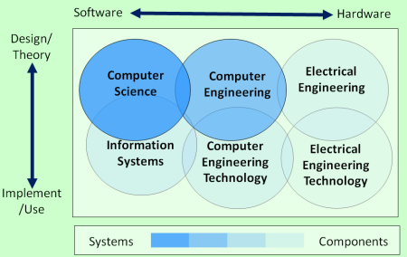

我所认识的编程与计算机 
Table of Contents
从写下第一行 C 代码到现在已有两年有余，代码少说也写了万余行。从刚开始写 C 代码的蹒跚学步，到现在能够使用 2 - 3 种编程语言，我也算是跨入了编程的大门。但是关于什么是编程，我至今也没有一个十分明确和清晰的概念。对我而言，编程就是在纯文本中输入一串串的字符串，将文本丢入解释器或编译器中执行，以此实现各种各样的功能。一言以蔽之，就是”编写并运行程序以实现功能“。在不断的学习和发现中，我学会了一些简单的算法，了解了最基本的编程项目组织管理知识，翻阅了一些介绍语言设计和编译原理的书籍。不断的学习使我认识到我对编程认识的片面性，“编写和运行程序”远远不是编程的全部。我缺少对编程的一个全面而整体的认识。
我对计算机的认识仅限于“提供运行各种各样程序的平台”。对数字电路技术基础的学习使我对计算机的硬件实现原理有了一定的了解，写了些 win32 程序让我知道了应用软件与硬件之间作为沟通桥梁的 win32API，而它的提供者正是大名鼎鼎的 Windows 操作系统。计算机就仅仅是底层的硬件基础再加上操作系统吗？这个认识很明显也是不准确的，甚至是错误的。我在这里所指的计算机并不仅仅是硬件，而是与计算机相关的一系列科学和技术。
以上就是我对编程和计算机的认识了，即：
- 编程：编写并运行程序
- 计算机：提供程序运行的平台
这两条认识很是浅显，很明显是从功能出发得到的结果，没有进一步地探索其内部的分类与组成。但这样的认识同样也是朴素的，是从我的编程实践中得到的最直观的体验。如果我满足于这样的认识，那么本文到了这里就可以结束了，但这是显然不可能的。在下文中，我会参考一些具有权威性的网站和书籍，对我上面列出的两句话进行修正和补充，以此得到一个更丰富，更准确的认识。
如果是对这两个词进行释义的话，上面两句话基本上是对的，但是本文的主要目的是对与它们相关的科学技术进行一个总结和整理。
让我们开始吧。
1 什么是编程
编程，是为了完成特定计算或执行特定任务而设计和构建一个可执行计算机程序的过程。编程的目的是找到一个可以在计算机上自动执行一个任务（这个任务可以像操作系统一样复杂）的指令序列。精通编程通常需要掌握多个不同学科的知识，包括应用领域的知识、特定的算法知识和形式逻辑等。
和编程相关的任务包括：测试、调试、源代码维护等。这些工作可以被看作编程过程的一部分，但对于较大的编程过程通常会使用使用术语“软件开发”（software development），实际的编写代码的过程则使用术语 实现 （implement）或 编码 （coding）。
做个粗略的分类，与编程相关的知识包括数学知识，算法知识，软件工程知识和特定问题的知识。撇开数学知识和特定问题知识，剩下的就是算法和软件开发。我将对这两方面进行较为详细的介绍。
1.1 算法
Algorithms + Data Structures = Programs - Niklaus Wirth
在数学和计算机科学（computer science）中，算法是一个良好定义的（well-defined），可由计算机实现的指令序列，它一般用于解决一类问题。算法总是无歧义的，并用于特定的计算、数据处理、自动推理等其他任务。
对算法的非形式化定义可以是“一个定义了一系列操作的规则集合”，这个定义可以包括所有的所有的计算机程序（也包括不进行数字计算的程序）。一般而言，仅当程序最终能够停下来，它才是一个算法。
算法并不是一个非常高深和晦涩的概念。通俗地说，算法就是解决问题的方法。交换两个变量的值当然也是算法，因为它是能够停下来的指令序列，就像这样：
int a = 1, b = 2, c; c = a, a = b, b = c;
1.1.1 算法的设计
按照上面的算法的定义，算法设计在某种意义上就是程序的设计。但这里的所指的算法范围可能更小，集中于某些一般性问题的解决。
算法的设计是是运筹学（operation research）的许多解决方法理论的一部分，例如动态规划（dynamic programming）和分治法（divide-and-conquer）。算法的设计与实现技术也叫做算法设计模式。算法设计最重要的概念之一是运行时效率，它也被叫做大O（Big O）。
算法设计的一般步骤包括：
- 定义问题
- 建立一个模型
- 指定算法
- 设计算法
- 检查算法的正确性
- 分析算法
- 实现算法
- 程序测试
- 编写文档
1.1.2 算法的分类
按照实现方式分类，算法可以分为：递归算法，逻辑算法，序列算法、并行算法和分布式算法，确定性和不确定性算法，精确和非精确算法。
按照设计范式分类，可以分为：暴力算法，分治算法，枚举算法，概率算法，规约算法，回溯算法。
按照优化问题分类，可以分为：现性规划算法，动态规划算法，贪婪算法，启发式算法。
按照复杂度分类，可疑分为：常数时间算法，线性时间算法，多项式时间算法，指数时间算法。
1.1.3 为什么会有算法和数据结构的区分
开头的名言是这么说的，程序 = 算法 + 数据结构。上文中我说过算法在某种意义上和程序是等价的，那么为什么还需要存在数据结构这个概念？如果你上过编程课的话，你大概率会学过叫做《算法与数据结构》或者类似的课程，课程名中算法与数据结构是并列关系。两者的区别和联系何在？参考资料【12】的回答中有着不同的理解和解释，经过整理和总结后的内容如下。
- Konrad Garus 的观点：算法和数据结构是不同的。考虑一下对二叉树的前序中序后序遍历，这是三种算法，但是作用对象是一个数据结构。再考虑一下对二叉树，B 树，AVL 树的遍历操作，这是一种算法，但是对象是 3 个数据结构，算法有时是独立于数据结构的，有时又不是，某种算法对于不同的数据结构可能有不同的复杂度。
- N 1.1 的观点：算法和数据结构关系非常紧密。算法依赖于数据结构，如果改变了两者中的任意一个，复杂度可能会发生显著的变化。特定的算法最好用于特定的数据结构，算法和数据结构是齐头并进的关系。
- user287792 的观点：它们是不同的大学课程。一般而言，数据结构课程强调编程，而且它是先于算法课程的，而算法课程强调对算法的数学分析。
让我们来看看维基百科上的关于数据结构的定义：
在计算机科学中，数据结构是一种数据组织，管理和存储的格式，它允许高效的访问和修改。更准确地说，数据结构是数据值，它们之间的关系以及可以应用于数据的功能或操作的集合。
数据结构是抽象数据类型（ADT）的基础。ADT 定义数据类型的逻辑形式，数据结构负责实现数据类型的物理形式。不同类型的数据结构适用于不同类型的应用，其中的一些是高度特化于指定问题的。
在参考资料【14】中有这样一句话：
Algorithms are like verbs and Data Structures are like nouns. An Algorithm is just a method of doing something on a computer, while a Data Structure is a layout for memory that represents some sort of data. - Om Singh
它的大意是：算法和数据结构就像是动词和名词。算法就是在计算机上做事的方法，数据结构是表示某种数据的内存布局。
根据以上内容，我们可以得到算法与数据结构之间的关系：
- 算法与数据结构是不同的东西
- 算法与数据结构的关系相当紧密
- 高效的算法和高效的数据结构有助于高效地解决问题
就我个人而言，算法和数据结构的提出都应该是基于需要解决的问题的。解决问题的第一步应该是对问题进行抽象，找出关键的影响因素并建立相应的模型，从而得到描述问题的数据结构抽象。接着，对问题的解决应该是基于得到模型展开的，从这里才开始算法的设计。算法是“一个定义了一系列操作的规则集合”，对数据结构的 操作 自然也属于这个操作集合。算法和数据结构，两者一动一静，共同组成了程序。数据结构在程序中的作用是不可忽视的，更准确的问题描述有助于更简单的解决问题。
回到标题”为什么会有算法和数据结构的区分“，现在我可以这样回答：数据结构在算法中的价值值得它被单独拎出来进行研究。
最普遍和最简单的数据结构估计就是这样几种：数组，链表，栈，队列，堆，二叉树，哈希表。
1.2 软件开发
软件开发是指创建和维护应用、框架或其他软件组件的一系列过程，它包括构想，设计，编码，文档，测试和 bug 修复等。软件开发是编写和维护源代码的过程，但在广义角度来看，它包括从软件的概念提出到软件的最终形式之间的所有部分。如果我们将编程仅仅看作是编码（写代码）的话，那么编程这个行为就是软件开发的一部分。
软件可以以各种各样的目的来进行开发，三种最通常的目的是：满足特定客户/商业的指定需求（custom software），满足某些潜在用户的感知（perceived）需求（开源软件和商业软件），和自己使用（例如一个科学家可能编写软件来自动化日常任务）。
对质量控制的更高要求导致了软件工程（software engineering）学科的发展，软件工程旨在将工程范式中的系统方法应用于软件开发。软件项目管理的方法有很多，它们被称为软件开发生命周期模型，方法论，过程或模型。
1.2.1 软件开发的方法论
软件开发的方法论是一个用来设计、结构化和控制开发进程的框架。各种各样的框架已经演化了许多年，每种都有它自己的长处或弱点。软件开发的方式有很多种，有些方法使用更加结构化和基于工程的方法来开发软件，有些则采用更增量的方法，软件随着开发过程而不断进化。某种系统开发方法论不一定适用于整个项目。
大多数的方法论都有以下软件开发阶段的某种组合：
- 分析问题
- 市场研究
- 收集计划软件的需求
- 为软件开发制定计划
- 实现（编码（coding））软件
- 测试软件
- 分发软件
- 维护软件和修补 bug
这些阶段通常统称为软件开发生命周期或 SDLC（software development life-cycle）。不同的软件开发方法可能会以不同的顺序安排这些阶段，或是为不同的阶段分配不同的时间。不同方法有着不同的优缺点，解决问题的最佳方法是取决于问题的类型。
1.2.2 编程范式
编程范式是计算机编程的一个基调（fundamental style），它一般不是由项目管理方法论来决定的。不同范式在用于表示程序元素的概念和抽象上（例如对象，函数，变量，约束），以及构成计算的步骤（例如赋值，求值，延续（continuation）和数据流）上表现为不同。有时，范式所主张的概念在高层系统体系（方法学）中被联合使用。在其他情况下，编程范式的范围限定于程序或模块的内部结果。
编程语言可以有多种范式。例如，C++ 写的程序可以是纯过程式的，或纯面向对象，或者是包含了两种范式元素。在面向对象编程中，程序员可以将程序看作一系列交互的对象，在函数式编程中则可被看作一系列无状态函数的求值。当在多系统或多处理器上编程时，面向进程编程（process-oriented programming）则允许程序员将应用程序看作一个对逻辑共享数据结果进行操作的并发进程集合。
就像软件工程中的不同群体提倡不同的方法论一样，不同的编程语言也提倡不同的编程范式。一些语言被设计为只支持一种范式（Smalltalk 支持面向对象编程，Haskell 支持函数式编程），其他的支持多范式（比如 Object Pascal，C++，C#，Visual Basic， Common Lisp，Scheme，Python，Ruby）
高阶的范式包括：
- Aspect-oriented software development 面向方向的软件开发
- Domain-specific modeling 特定领域建模
- Model-driven engineering 模式驱动工程
- Object-oriented programming 面向对象编程
- Search-based software engineering 基于搜索的软件工程
- Service-oriented modeling 面向服务建模
- Structured programming 结构化编程
- Top-down and bottom-up design 自顶向下和自底向上设计
1.3 编码（coding）
这里说的编码并不是像打字一样输入文本，而是指编写符合需求的代码。严格来说，这一部分应该放到软件开发中去，但现在编程在大众眼中的意思大致就是编码。这部分可讲的东西也不少，干脆单独拎出来作为单独的一小节吧。
除了作为知识的算法和作为指导思想的软件工程，编程最引人注目的部分估计就是实际的编码了，也就是所谓的敲代码。如果把软件开发比作军队作战的话，编码能力就是大头兵的作战能力。编辑器，编译器，解释器，调试器，搜索引擎等计算机软件或工具就是程序员手中的冲锋枪，一行行的代码就是射出的子弹。
有人说“编程语言就是工具”，这个说法对于软件开发是成立的，编码只是软件开发的一部分。对于研究编程语言的人而言，编程语言的意义远不止于工具。在这里，我们暂且就将编程语言作为一种工具看待吧。
1.3.1 什么是编程语言
编程语言是由提供各种输出的指令集组成的形式语言。编程语言被用在计算机编程中，来实现算法。编程语言是计算机程序的实现过程中必要的工具。
对编程语言的描述通常分为语法和语义两个部分。有些语言由 specification document 定义（例如， C 语言由 ISO 标准指定），而另一些语言有一个被当作标准的主导实现（比如 Perl）。一些语言同时具备两者，既有标准定义的基本语言，又有从主要实现中得到的通用扩展。
掌握一门编程语言，基本上就是掌握它的语法，它的标准库和一些语言特有的特性了。王垠在一篇文章【5】中写到”任何一种语言，都是各种“语言特性”的组合。“这里引用他文章里的几段话。
任何一种“语言”，都是各种“语言特性”的组合。打个比方吧，一个程序语言就像一台电脑。它的牌子可能叫“联想”，或者“IBM”，或者“Dell”，或者“苹果”。那么，你可以说苹果一定比 IBM 好吗？你不能。你得看看它里面装的是什么型号的处理器，有多少个核，主频多少，有多少 L1 cache，L2 cache……，有多少内存和硬盘，显示器分辨率有多大，显卡是什么 GPU，网卡速度，等等各种“配置”。有时候你还得看各个组件之间的兼容性。
这些语言特性，就像你在选择一台电脑的时候，看它里面是什么配置。选电脑的时候，没有人会说 Dell 一定是最好的，他们只会说这个型号里面装的是 Intel 的 i7 处理器，这个比 i5 的好，DDR3 的内存 比 DDR2 的快这么多，SSD 比磁盘快很多，ATI 的显卡是垃圾…… 如此等等。
按照王垠的观点，语言是语言特性的巧妙组合。语言特性相对于语言，正如骨骼之于人体，把握好语言的骨架知识有助于对不同语言的学习掌握，毕竟万变不离其宗。
编程语言与上文提到的编程范式有着十分紧密的联系，编程语言体现着语言作者对于编程风格的见解，作者钦定的”一等公民“以及支持的语法就决定了在语言中使用某种编程范式的难易程度。试想在面向过程的 C 语言中编写面向对象风格的代码，虽然这样是可行的（比如 GObject），但是这样做相对于支持面向对象范式的语言显得十分别扭（可能需要各种变态的宏）。在 Scheme 中过量使用赋值也会使代码的可读性显著下降，远远不如函数式简洁。语言想要引入多范式就需要考虑到各个范式之间的相互影响，这种影响通常并不是什么好事，各范式之间的相容性可能并不怎么好。
1.3.2 编码的各种工具
编程的过程是在纯文本上进行的，想要编辑文本，自然是需要编辑器。完成代码的编写后，下一步是将它丢到解释器或编译器中观察输出结果。如果出现了错误，则需要根据错误提示对程序进行调试，如此反复得到满足要求的程序。
- Text Editor
文本编辑器是一种编辑纯文本的计算机程序。操作系统一般都会提供文本把编辑器，它可以用来改变文件内容，比如配置文件，文档和源代码。
一般的编辑器都会提供的功能有：查找和替换，剪切、复制和粘贴，文本格式化，撤销和反撤销。用于编程的文本编辑器则会提供更加丰富的功能，比如语法高亮，行编辑，区块折叠和展开，多窗口和多文件等。
在 Linux 上有两个著名的编辑器，它们是被称作”神的编辑器“和”编辑器的神“的 Emacs 和 Vim。相比于其他编辑器，它们最大的特征是强大的可扩展性。例如，你可以通过 evil 插件在 Emacs 中使用 vim 风格的按键。
- Interpreter and Compiler
关于解释器和编译器的简要介绍可以再写一篇文章了，这里仅仅是提一提。
解释器 是一个直接执行由编程语言编写的指令的计算机程序，它不需要对其进行编译得到机器语言程序。一般而言，解释器会使用以下的几种策略来执行程序：
- 解析源代码并直接执行它
- 将源代码翻译为某些高效的中间表示并执行它
- 显式执行由解释器自带的编译器预编译后得到的代码
编译器 是将由编程语言编写的代码（源语言）翻译为其他语言（目标语言）的计算机程序。“编译器”这个名字最初用于将高级语言翻译为低级语言来创建可执行文件的程序。编译器一般会执行以下操作：预处理，词法分析，语法分析，语义分析，将程序转化为中间表示，代码优化和生成代码。
尽管编译器和解释器是实现编程语言的两种主要方法，但是它们并不是相互排斥的，大多数的解释系统也会进行某些翻译工作，就像编译器做的那样。术语“解释型语言”和“编译型语言”分别表示规范实现是解释器或编译器的语言。理想情况下，高级语言是独立于特定实现的抽象。
在 Structure and Interpretation of Computer Programs 一书的第四章中，作者对解释器的描述很有意思：
事实上，我们几乎可以把任何程序看作是某个语言的解释器。解释器决定了一个程序设计语言中各个表达式的意义，而它本身也不过是另一个程序，
实际上，编译器除了负责将源代码编译为目标码（大部分时候指机器码）外，还有一种叫做链接的工作，负责将多个目标文件链接起来得到可执行文件，关于编译器与操作系统的关系，参考资料【13】给出了一个不错的回答。
- Debugger
调试器是一种测试和调试其他程序的计算机程序。调试器的主要作用是在受控条件下运行目标程序，使程序员可以追踪其正在进行的操作并监视计算机资源（通常使目标程序或计算机系统使用的内从区域）的变化，某些变化可能说明程序的问题。一般而言，调试的功能会包括在指定点运行或停止的能力，显示内存和 CPU 寄存器或存储设备（比如硬盘）内容的能力，以及修改内存或寄存器内容以输入可能造成程序执行错误的测试数据的能力。
被调试器检测的代码可能会允许在一个指令集模拟器上（ISS），这是一种允许在遇到指定条件时停止执行的强大技术，但是这样一般会比直接执行代码要慢一些。
当程序因为编程错误或不合法的数据而不能正常执行时，会发生异常（trap）。例如，程序可能尝试使用在当前 CPU 上不可用的指令，或是尝试访问被保护的内存。当程序“trap”时或到达提前设定的断点时，调试器一般会显示源代码出现位置的地点。
一些调试器只对指定的一种语言进行调试，而其他的一些支持多种语言。
- Profiler
在软件工程中，性能分析是对程序进行测量的动态程序测试，它的对象可以是程序的时间空间复杂度，特定指令的使用，或是函数调用的频率和时间。大多数情况下，性能分析的信息用于帮助程序调优。
通过使用叫做性能分析器的工具来检测程序源代码或其二进制形式来实现性能分析。性能分析器可能使用多种不同的技术，比如基于事件的方法，统计方法，和模拟方法。
我所了解到的性能分析器只有 Linux 上的 Valgrind。有关资料可以参考其官网。
- Version control System
在软件工程中，版本控制是一类负责管理变化的系统，它的对象可以是计算机程序，文档，大的网页，或其他信息集合。版本控制是软件管理配置的组成部分。
修改通常使用数字和字母表示，它的术语是“修订码”。例如，初始版本叫做”修订 1“，当第一次修改出现时，得到的版本就叫做”修订 2“，如此继续下去。每个修订都有一个与之关联的时间戳和做出修改的人员。
对修订的组织和控制需求几乎是随着书写开始存在而存在，但是修订控制是随着计算机时代的到来而变得越来越重要和复杂的。
目前（2020年），世界上使用最多的版本控制系统是 Linus 发明的 git，它是一种分布式管理系统。
- Integrated Development Environment
集成开发环境（IDE）是一种为软件开发提供了全面功能的应用程序。IDE 一般至少由源代码编辑器，自动构建工具和调试器组成。某些 IDE，比如 NetBeans 和 Eclipse 包含了必要的解释器和编译器，而另一些则没有。
IDE 被设计用来最大化程序员的生产力。IDE 提供了一个程序，这个程序为你准备好了开发所需的一切工具。这与使用不相关工具进行开发是不同的，比如使用 vi，gcc，和 make。
IDE 的一个目标就是减少将多个开发工具组合在一起所需的配置，相反，它提供一个具有内聚力的配置单元。减少配置时间可以增加开发者的生产力，尤其是在学习使用 IDE 比手动集成和学习所有的单个工具所使用的时间更少时。
IDE 提供的功能可能包括：语法高亮，代码补全，重构，版本控制，调试，代码搜索和定位，可视化编程。这是一个不完全的列表。
IDE 与其他软件开发环境的边界并没有被很好地定义。有时版本控制工具或其他构建图形化界面的工具会被集成到 IDE 中。许多现代的 IDE 会有类浏览器，对象浏览器，和在面向对象开发中使用的类继承图表。
比较著名的 IDE 有 Visual Stduio，JetBrain，等等。
1.4 本节的一个小结
回到我最初的认识：编程就是编写并运行程序。经过一长串的学习，让我们来对这句话进行补充和修改。以下观点仅代表个人观点，具有一定的局限性，也可能带有一定的错误。
首先，让我们重新定义（说成描述可能会更好）一下“编程”这个词。在大众语境中，编程就是在电脑上敲代码，很明显这是不符合我的认识的。在上文中我们提到了“编码”这个词，也就是编写代码实现程序的过程，我也不认为这是编程的全部。我所理解的编程是一种个人行为，即小规模的软件开发。这里的小规模指个位数的人员，以及远少于大型软件开发生命周期的时间和投入。对于大规模的开发行为，直接就叫软件开发吧。
那么，什么是软件开发？软件开发的过程上面已经提到过，即：分析问题，分析需求，制订设计和计划，软件编码（也就是实现），软件测试和软件维护。对于以个人为单位的软件开发而言，分析需求和软件的测试与维护占比并不一定很大，可以简化为分析问题 -> 制定计划 -> 实现 -> 测试与维护 这几步。其中最为人所了解的，也是最具有程序员特征的就是编码部分。可以看到，编程过程中一个人是要身兼数职的，既要做项目的管理者，又要作为项目的具体实现者。大型软件开发过程中不同的工作是由不同的职员来完成的，程序员负责编程实现部分，软件工程师负责按照软件工程的规范设计和编写程序，测试工程师负责测试软件是否达到需求，架构师负责设计软件系统架构，项目经历负责管理整个项目生命周期，需求分析师负责根据项目范围获取用户软件需求，等等……
具体到编码，体现的是程序员个人的能力，除了能够熟练使用各种需要用到的编程语言和用于构建程序的工具，还需要具备一定的算法知识，以及通用的计算机知识。
综上所述，我所认为的编程就是这样的一种行为：
编程是一种在人力、物资、时间上小规模投入的，以 分析问题 -> 制定计划 -> 实现 -> 测试与维护 过程为流程的，要求人员具有熟练使用编程语言和相关编程工具以及具有一定算法知识，软件工程知识和其他相关知识的行为。
这个定义存在着许多的局限性，它过分强调了编码过程的重要性，不过这也许是我在实际编程过程中的直观体会所造成的结果（笑）。除去编码，分析问题和制定计划的能力也是相当重要的，它们代表了对项目方向的掌握以及项目管理的能力。测试和维护也是软件开发中的重要一环。这些都是编程过程中不可忽略的环节。
2 什么是计算机
上面所谈到的编程更多的是一种实践意义上的行为，它要求我们利用各方面的知识和技术来完成一个给定的工作。现在讲到计算机，更多的是知识性的东西。
计算机是一种机器，它可以通过计算机编程来执行算数或逻辑运算序列。现代计算机拥有运行通用操作集合的能力，即运行程序（programs）的能力。这些程序允许计算机执行及其广泛的任务。一个“完整”的计算机系统包括硬件（hardware），操作系统（operating system）和外围的设备。计算机系统这个属于也可以用于连接在一起共同工作的一群电脑，特别是指计算机网络（computer network）或计算机集群（computer cluster）。
计算机被作为控制系统广泛地在工业（industrial）和消费电子产品（consumer devices）中使用。这包括像是微波炉和遥控器之类的单一功能设备，和像是工业机器人和计算机辅助设计的工厂设备，以及像是个人电脑和移动设备的通用功能设备。因特网（Internet）运行在计算机上，它连接成千上万的计算机和它们的使用者。
2.1 计算机的硬件组成
2.1.1 输入设备
当未被处理的数据在输入设备的帮助下被发送到计算机时，数据会被处理并发送到输出设备。输入设备可以是手动的也可以是自动的。数据的处理过程由 CPU 负责。常见的输入设备包括：
- 计算机键盘，Computer keyboard
- 鼠标，Mouse
- 触摸板，Touchscreen
- 数字相机，Digital camera
- 扫描仪，Image scanner
2.1.2 输出设备
计算机给出输出的设备即为输出设备，常见的输出设备包括：
- 计算机显示器，Computer monitor
- 打印机，Printer
- 声卡，Sound card
- 显卡，Video card
2.1.3 控制单元
控制单元（通常叫做控制系统或中央控制器）管理着计算机的各个组件；它读取并解释程序指令，将它们转化成控制信号来激活计算机的其他部分。某些高级计算机的控制单元可能会打乱某些指令的执行顺序来提高性能。
所有 CPU 共有的关键组件是程序计数器（program counter），它是一种特殊的存储单元（寄存器），用于追踪下一条要读取的指令在存储器中的哪个位置。
控制系统的功能如下所示 —— 需要注意的是，这是一个简化后的版本。
- 从程序计数器指定的单元读取下一条指令
- 对数字指令码进行解码得到一个命令或信号集
- 增加程序计数器，使它指向下一条指令
- 从存储（或其他输入设备）中读取指令要求的数据。数据的位置一般存储在指令码中
- 为 ALU 或寄存器提供必要的数据
- 如果指令需要使用 ALU 或专用硬件来完成，则指示（instruct）硬件执行所需操作
- 将 ALU 中的结果写回到存储区域，或写入到寄存器，或是一个输出设备
- 回到第一步
因为程序计数器不过是另一种存储单元，它可以通过 ALU 的计算进行改变。对程序计数器加上 100 会导致下一条指令从距离当前指令 100 个单位的地方被读取。修改程序计数器的指令一般叫做”跳跃“（jumps），它允许循环和条件执行的实现。
控制单元处理指令序列的操作本身就像一个简单的计算机程序（一个简单的解释器），实际上，在更复杂的 CPU 设计中，还有一个被叫做微序列器（microsequencer）的小计算机，它运行一个微代码程序来控制这一切的发生。
2.1.4 逻辑算数单元（ALU）
ALU 负责两类操作：算数和逻辑。某个 ALU 支持的算数操作可能被限制在加法和减法，其他的可能包括乘除法，三角函数以及开平方。某些 ALU 只能计算整数，而其他的一些可以计算有限精度的浮点数。然而，所有只能进行简单计算的计算机可以通过编程来进行更复杂的运算。因此，通过编程，所有的计算机都可以进行任意的算数运算 —— 即使因为 ALU 不直接支持运算而需要更多的运算时间。逻辑运算包括与运算，或运算，异或运算和非运算。这些运算可以用来创建复杂的条件语句和处理布尔逻辑。
超标量（Superscalar）计算机可能包含多个 ALU，这允许它们能同时执行多个指令。图形处理器以及使用 SIMD 和 MIMD 特性的计算机通常包含能够处理向量和矩阵的 ALU。
2.1.5 中央处理器（CPU）
控制单元，ALU，和寄存器被统称为中央处理单元。早期的 CPU 由许多分立组件组成。从 1970 年代开始，CPU 一般被构建在一片叫做微处理器的 MOS 集成电路芯片（MOS integrated circuit）上。
2.1.6 存储
计算机存储可以看作一系列的单元，可以从单元中读取和写入数字。每个单元有一个数字”地址“。计算机可以使用使用像是”把数字 123 放入编号为 1357 的单元中“或”把在编号为 1357 单元中的数字和编号为 2468 单元中的数字相加并把结果放到编号为 1595 单元中“的指令。存储在计算机存储中的信息可以表示任何的东西，比如数字，字母，甚至是计算机指令。
在几乎所有的现代计算机中，每个存储单元被设置为存储 8 个比特位（叫做字节）。每个字节可以表示 256 个不同的数字（2^8 = 256）；可以是从 0 到 255，也可以是从 -128 到 +127。要想存储更大的数字，可以将几个连续的字节连在一起用（一般是两个，四个或八个）。当需要表示负数时，数字一般使用 2 的补码形式存储。
CPU 包含一个叫做寄存器的特殊存储单元集合，它可以以远快于主存的速度进行读写。寄存器的数量在 2 个到 100 个之间，具体的数量取决于 CPU 的类型。寄存器用来存储使用最频繁的数据项，以此避免每当需要数据时主存中读取。
计算机主存有两个主要种类：
- 随机访问存储或者叫 RAM，random-access memory
- 只读存储或者叫 ROM，read-only memory
RAM 可以在 CPU 命令下达的任何时间进行读写，而 ROM 则预装载了不可改变的数据和软件，因此 CPU 只能对它进行读取。ROM 一般用来存储计算机的初始化指令。一般来说，RAM 的内容会在计算机关机后被擦除，但是 ROM 会保持数据不变。在 PC 上，ROM 包含着一种叫做 BIOS 的程序的信息，它被用来在计算机开机或重启时从硬盘中引导操作系统进入 RAM。在嵌入式计算机中，计算机可能没有硬盘驱动，所有需要的软件都放在 ROM 中。存储在 ROM 中的软件一般叫做固件（firmware），因为它比起软件更像是硬件。闪存（Flash memory）模糊了 ROM 和 RAM 的区别，它可以在关机时保存信息，但它同时也是可写入的。它的速度一般比传统 ROM 和 RAM 慢很多，因此它应用在对速度要求不高的地方。
2.2 计算机上的软件
软件 指计算机上没有实体形式的部分，例如程序，数据，协议等。软件是由编码的信息或计算机指令组成的，是计算机系统的一部分，这是相对于构建起系统的物理硬件而言的。计算机软件包括计算机程序（computer programs），库（libraries，不是 database）和相关的不可执行数据，例如在线文档和数字媒体。计算机软件通常被分成系统软件（system software）部分和应用软件（application software）部分。计算机软件和硬件相互依存，两者不能离开对方而独自存在。
2.3 计算机网络
计算机网络是一组使用通用通信协议连接的计算机，使用网络的目的是共享网络节点上的或是网络提供的资源。节点之间的互连是由广泛电信网络技术构成的，它基于可以布置在各种网络拓扑中的物理有线、光纤和无线方法。
计算机网络的节点可以被归类为个人计算机，服务器，网络硬件，或是通用目的网络主机（hosts）。它们通过主机名和网络地址进行标识。主机名作为节点的易记忆标签，很少在初始化后改变。网络地址用于通过通信协议（例如因特网协议）来定位和标识节点，
计算机网络支持许多的应用和服务，比如访问万维网，数字媒体，共享应用和存储服务器，以及使用 email。
2.4 更一般化的计算机的定义
计算机不必是电子式的，或者甚至不必有处理器，RAM，更甚至不必有硬盘。对计算机的现代定义如下：
A device that computes, especially a programmable [usually] electronic machine that performs high-speed mathematical or logical operations or that assembles, stores, correlates, or otherwise processes information
2.5 与计算机有关的科学和技术
计算机科学的基础问题在于，什么可以被自动化 - Peter Denning
如果我们把计算机仅仅看作是硬件和软件的结合的话，那就没有必要写这一段了。我认为还有必要关注一下与它相关的科学与技术。
（图片来源：Computer Engineering - Purdue University Fort Wayne）

计算机科学(computer science, cs)是对计算（computation）和信息（information）的研究。计算机科学处理计算理论（theory of computation, algorithms），计算性问题（computational problems）和计算机系统硬件设计，软件设计。计算机科学同时解决人造的和自然的信息处理，比如通信，控制，感知，学习和智能，特别是在人为计算系统和机器中。
计算机科学的领域可以分为理论科学和实践科学（应用科学）。例如计算性复杂理论（computational complexity theory）描述了需要解决计算性问题所需的资源，而计算机图形学（computer graphics）和计算几何（computational geometry）强调特定的应用。算法被称为计算机科学的核心。编程语言理论（Programming language theory）研究对计算过程的描述，而软件工程（software engineering）涉及编程语言和复杂系统的使用。计算机系统架构（Computer architecture）和计算机工程（computer engineering）处理计算机组件和计算机控制设备的构造。人机交互（Human–computer interaction）研究如何使计算机变得有用，可用和可达。人工智能（Artificial intelligence）旨在综合以目标为导向的过程，例如解决问题，决策，环境适应，运动计划，学习等。
2.5.1 计算理论科学
计算理论科学从本质上讲是数学和抽象的，但它也是用实践和日常的计算中获得驱动力的。它的目的是理解计算的本质，并以此理解和提供更高效的算法。所有和数学，逻辑以及形式概念和方法有关的研究都可以视作计算理论科学，只要它的动机明显来自计算领域即可。
- 计算理论
计算理论关注对基本问题的解答，也就是什么是可以计算的，以及需要多少资源来进行这些计算。为了回答第一个问题，计算理论研究了在各种理论计算模型上解决的计算问题。第二个问题由计算复杂性理论（computational complexity theory）解决，它研究使用不同方法来解决多种计算问题的时间和空间成本。
著名的 P=NP？问题是计算理论中的一个开放问题，它是千年奖问题（Millennium Prize Problems）之一。
- 信息和编码理论
与概率论和统计关系关系紧密的信息理论与信息的量化有关。它由 Claude Shannon 开发，目的是找到信号处理操作的基础限制，操作例如压缩数据和可靠存储和传递数据。编码理论是研究编码属性（将信息从一种形式转换为另一种形式的系统）和它们适用特定领域的理论。编码可以用在数据压缩，加密，错误检测和纠错上。对编码的研究是为了设计出高效和可靠的数据传输方法。
- 数据结构和算法
数据结构和算法研究的是通用计算方法和它们计算效率。
- 编程语言理论
编程语言理论是计算机科学的一个分支，它复杂编程语言的设计， 实现 ，分析，描述，以及它们各自的特性。它基于计算机科学，同时受到数学，软件工程和语言学的影响。
- 形式方法
形式方法一种特殊的基于数学的技术，用于软件，硬件系统的规范，开发和验证。对执行适当的数学分析有助于设计的可靠性和鲁棒性的期望推动了将形式方法用于软件和硬件设计。它们构成了软件工程的重要理论基础，尤其是设计安全的地方。形式化方法是软件测试的有用辅助方法，因为它们有助于避免错误，并且还可以提供测试框架。对于工业用途，需要工具支持。然而，使用形式化方法的高成本意味着它们通常仅用于开发高度完成性的系统，对它们而言安全性是至关重要的。形式化方法最好描述为在相当广泛的计算科学理论基础上的应用，尤其是逻辑计算，形式语言，自动推理和程序语义，以及类型系统和代数数据类型对软件和硬件规范以及验证。
2.5.2 计算机系统
- 计算机系统架构和计算机工程
计算机系统架构，或数字计算机组织是计算机系统的概念设计和基本操作结构。它主要侧重于中央处理器在内部只要和访问内存地址的方式。这个领域通常涉及计算机工程和电气工程学科，选择和互连硬件组件来创建满足功能，性能和成本目标的计算机。
- 计算机性能分析
计算机性能分析是对计算机工作流的研究，其总体目标是提高吞吐量，控制响应时间，高效利用资源，消除瓶颈以及预测峰值负载下的性能。基准测试（Benchmarks）被用来比较承载不同芯片和/或系统架构的性能。
- 并发，并行和分布式系统
并发是系统的一个属性，它允许多个计算在同时开始执行，它们之间可能会互相交流。当多个计算机通过网络连接并使用并发时，这个系统就叫做分布式系统。分布式系统中的计算机有它自己的私有内存，它们可以通过交换信息来实现共同的目标。
- 计算机网络
该计算机科学分支旨在管理全世界范围内的网络连接。
- 计算机安全与密码学
计算机安全是计算机技术的一个分支，它的目标在于保护信息以避免未授权的访问、破坏或修改。密码学是隐藏（加密）和解密信息的研究与实践现代密码学与计算机科学有相当大的相关性，因为许多的加密和解密算法是基于它们的计算复杂性的。
- 数据库
数据库的是组织，存储和轻易访问大量数据的工具。数字数据库使用数据库管理系统来存储，创建，维护和搜索数据，这些操作通过数据库模型和查询语言来实现。
2.5.3 计算机应用
- 计算机图形学
计算机图形学是对数字视觉内容的研究，涉及图像数据的合成和处理。它的研究与计算机科学的许多其他领域相关联，这包括计算机视觉，图像处理，和计算几何。它在特效和游戏领域有很多应用。
- 人机交互
人机交互是为用户界面设计师提供开发理论，原理和准则的研究，以便他们可以在台式机，笔记本电脑和移动设备上创建令人满意的用户体验。
- 科学计算和仿真
科学计算是与构建数学模型和定量分析技术以及使用计算机来分析和解决科学问题的研究领域。科学计算的一个主要用途是仿真各种过程，这包括计算流体动力学，物理学，电子学，和电子系统和电流，还有社会仿真，等等。现在计算机允许优化整个飞机的设计。
- 人工智能
人工智能是计算机科学的一个分支，它企图了解智能的实质，并生产出一种新的能以人类智能相似的方式做出反应的智能机器，该领域的研究包括机器人、语言识别、图像识别、自然语言处理和专家系统等。人工智能从诞生以来，理论和技术日益成熟，应用领域也不断扩大，可以设想，未来人工智能带来的科技产品，将会是人类智慧的“容器”。人工智能可以对人的意识、思维的信息过程的模拟。人工智能不是人的智能，但能像人那样思考、也可能超过人的智能。
2.5.4 软件工程
软件工程对设计，实现和修改软件的研究，以确保软件的高质量，合适的价格，可维护性和可构建性。它是软件设计的系统方法，设计将工程实践应用于软件。软件工程涉及软件的组织和分析 —— 它不仅涉及新软件的创建或制造，还涉及其内部的组织与维护。
2.6 本节的一个小节
同样，让我们回到我到我对计算机最初的定义（或者说观点）：计算机是提供程序运行的平台。
为了实现这一目的，计算机既有硬件上的需求，也有软件上的需求。一个完整的计算机应该包括 CPU，存储设备，输入输出设备，以及在硬件上运行的软件。
计算机科学的范围是十分广阔的，既有偏向于数学的科学理论，也用使用计算机达到某些目的的应用科学。
3 总结
从某种意义上说，本文也可以算作是知识的堆砌，但仅凭几句干瘪的总结又不足以直观且完整地窥见编程和计算机的全貌。我是希望这篇文章达到某种程度的 self-contained，再回来看看自己对编程和计算机的认识时，不至于碰到一个词语就需要百度一下或 google 一下。
让我们再复述一遍我对它们的认识吧：
编程是一种在人力、物资、时间上小规模投入的，以 分析问题 -> 制定计划 -> 实现 -> 测试与维护 过程为流程的，要求人员具有熟练使用编程语言和相关编程工具以及具有一定算法知识，软件工程知识和其他相关知识的行为。
一个完整的计算机应该包括 CPU，存储设备，输入输出设备，以及在硬件上运行的软件。
如果本文对你在一些概念的澄清上有所帮助，那就是我莫大的荣幸。如果你对本文的某些观点并不认同，欢迎与我讨论。如果发现文中存在知识性的错误，请及时告诉我，我会尽快修改。
I think that it's extraordinarily important that we in computer science keep fun in computing. When it started out, it was an awful lot of fun. Of course, the paying customers got shafted every now and then, and after a while we began to take their complaints seriously. We began to feel as if we really were responsible for the successful, error-free perfect use of these machines. I don't think we are. I think we're responsible for stretching them, setting them off in new directions, and keeping fun in the house. I hope the field of computer science never loses its sense of fun. Above all, I hope we don't become missionaries. Don't feel as if you're Bible salesmen. The world has too many of those already. What you know about computing other people will learn. Don't feel as if the key to successful computing is only in your hands. What's in your hands, I think and hope, is intelligence: the ability to see the machine as more than when you were first led up to it, that you can make it more.
Alan J. Perlis (April 1, 1922-February 7, 1990)
4 参考资料
【1】 Computer programming： https://en.wikipedia.org/wiki/Computer_programming
【2】 Software development： https://en.wikipedia.org/wiki/Software_development
【3】 Algorithm - Wikipedia： https://en.wikipedia.org/wiki/Algorithm
【4】 Algorithms + Data Structures = Programs： https://en.wikipedia.org/wiki/Algorithms_%2B_Data_Structures_%3D_Programs#:~:text=Algorithms%20%2B%20Data%20Structures%20%3D%20Programs%20is,algorithm%20optimal%20for%20sorted%20lists.
【5】 如何掌握所有的程序语言： http://www.yinwang.org/blog-cn/2017/07/06/master-pl
【6】 Editing： https://en.wikipedia.org/wiki/Editing
【7】 Text editor - Wikipedia： https://en.wikipedia.org/wiki/Text_editor
【8】 Compiler - Wikipedia： https://en.wikipedia.org/wiki/Compiler
【9】 Interpreter (computing) - Wikipedia： https://en.wikipedia.org/wiki/Interpreter_(computing)
【10】 Structure and Interpretation of Computer Programs, Harold Abelson, Gerald Jay Sussman Julie Sussman
【11】 Debugger - Wikipedia： https://en.wikipedia.org/wiki/Debugger
【12】 Why are ”Algorithms“ and ”Data Structures“ treated as separate disciplines? - Stack Overflow： https://stackoverflow.com/questions/2441845/why-are-algorithms-and-data-structures-treated-as-separate-disciplines#:~:text=An%20algorithm%20is%20a%20set,data%20is%20done%20with%20algorithms.&text=They%20are%20separate%20university%20courses.
【13】 编译器与操作系统的关系： https://zhuanlan.zhihu.com/p/41193876
【14】 Every Beginner Should Know These Differences Between Data Structures and Algorithms： https://medium.com/swlh/differences-between-data-structures-and-algorithms-eed2c1872cfc
【15】 Data Sttructure： https://en.wikipedia.org/wiki/Data_structure
【16】 Computer： https://en.wikipedia.org/wiki/Computer
【17】 《鸟哥的 Linux 私房菜 基础学习篇》，鸟哥
【18】 Computer network： https://en.wikipedia.org/wiki/Computer_network
【19】 Computer science： https://en.wikipedia.org/wiki/Computer_science
【20】 Computer Engineering： https://www.pfw.edu/departments/etcs/depts/fye/degree-programs/computer-engineering